A project by Ideo Maker
José Miguel Quiroz High School, Taltal
An Aula Impulsa 4.0 for the technical-vocational high school in Taltal: designed and walked through in 3D, set up on site and opened in June 2026.
This is a project by Ideo Maker, made by its team. Here I show the part I worked on.

An Aula Impulsa for José Miguel Quiroz Technical-Vocational High School, in Taltal. Impulsa 4.0 is a Fundación Chile program funded by Antofagasta Minerals, BHP, Codelco, Novandino Litio and SQM, which aims to bring students and teachers closer to four Industry 4.0 technologies: robotics, virtual and augmented reality, programming and prototyping. Ideo Maker carried out the whole project, from design to teacher training, in parallel with the classroom at Minero América High School (B-10) in Calama.
01My role
- Space design and 3D model in Unreal Engine
- Budgets, Gantt chart and logistics
- On-site setup: assembling and installing the furniture
- Teacher training in the four technologies
Ideo Maker team
- Sebastián Higuera
- Patricia Ramírez
- Vicente Cáceres
- Nelson Mora
- Javiera Matus
- Diego López
- Elvis Andrade
- Lesly Maldonado
02The space
The assigned room is in the central part of the school, with direct access from the main hallway, and measures about 5.8 by 7.3 meters. The design divides that area into work zones, one per technology, and leaves the center for collaborative work tables. The proposal sought for the classroom to speak to Taltal, its coastline, fishing and heritage, so the students' projects would start from their own community.

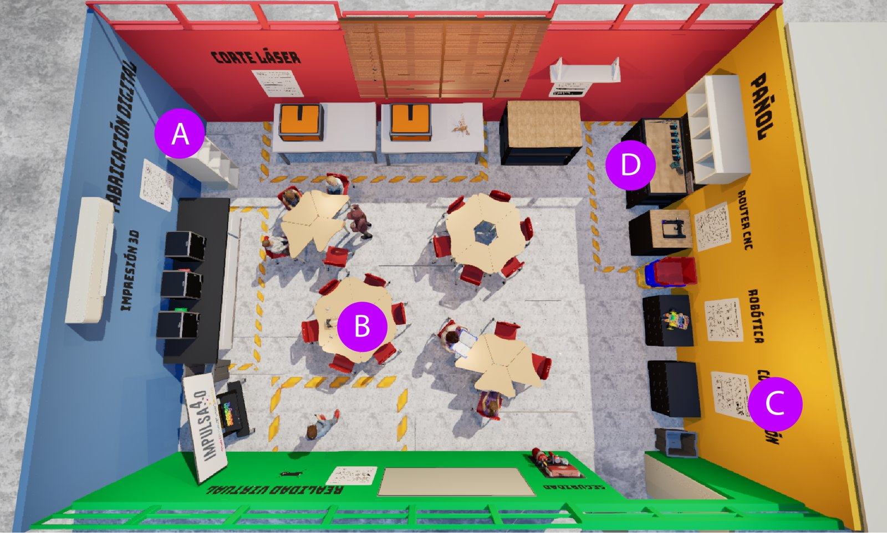

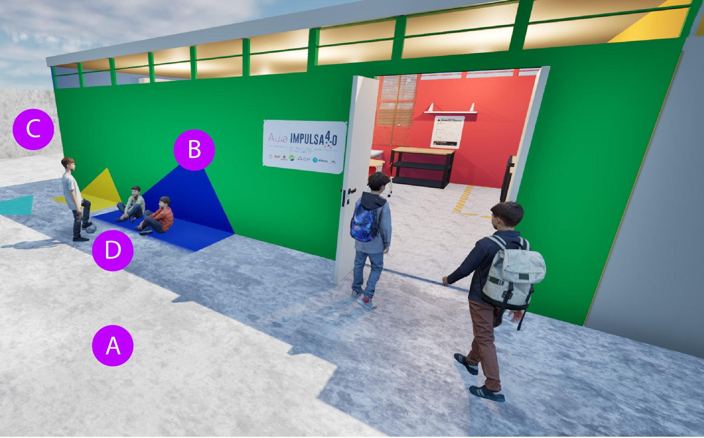

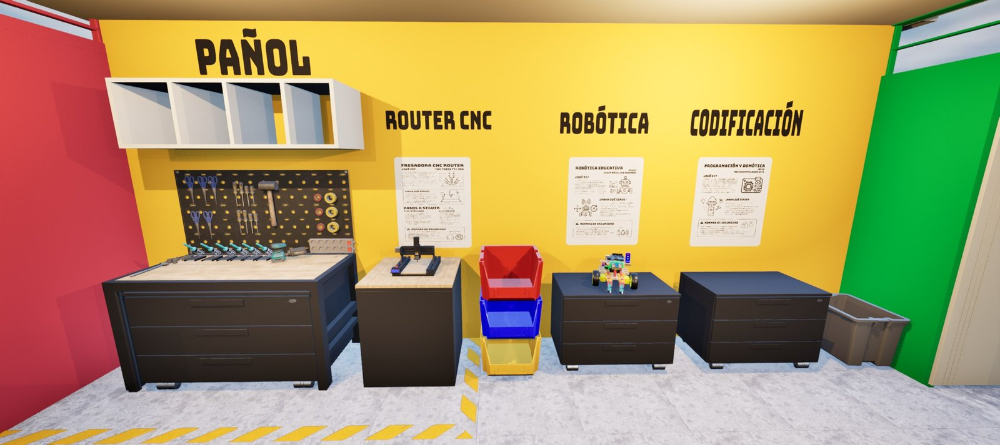

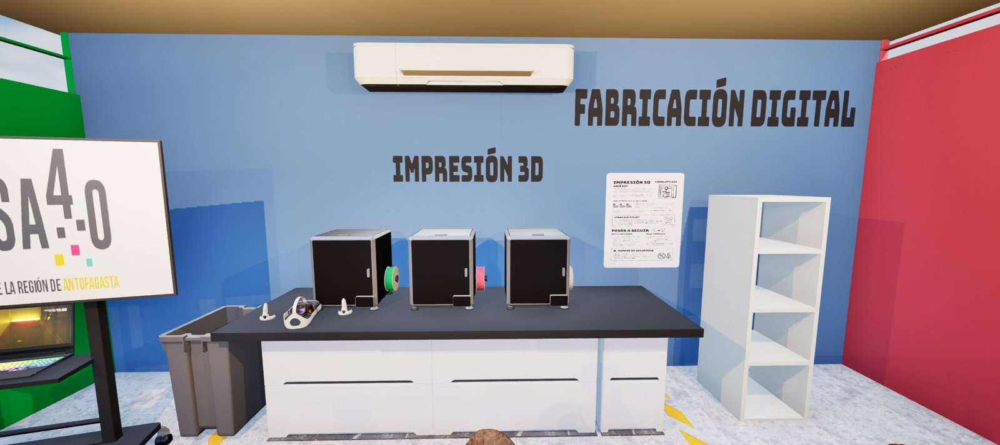

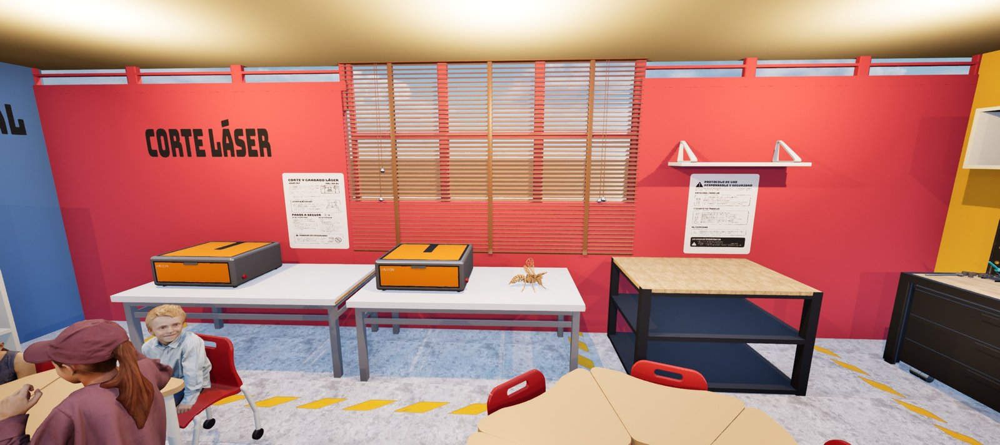

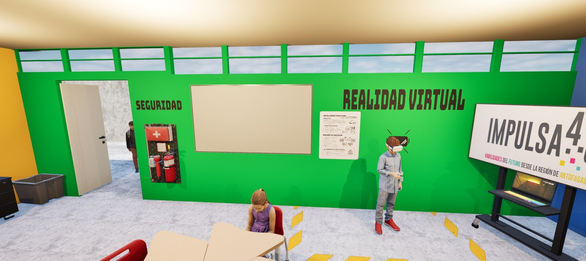
03The opening
The classroom opened in early June 2026, together with the one at Minero América High School in Calama. It was designed through a co-design process with the school community and joins the network of classrooms already running in Likan Antai and María Elena.

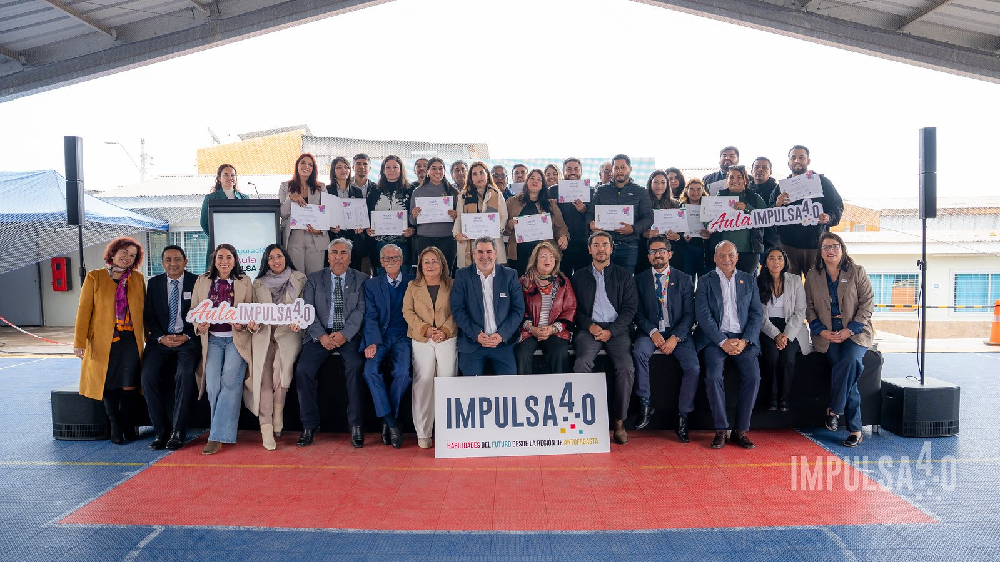

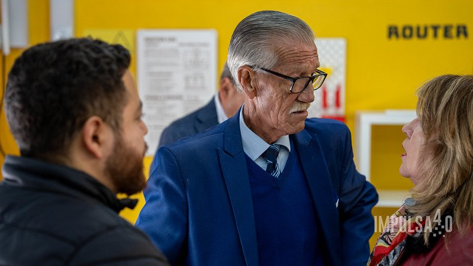

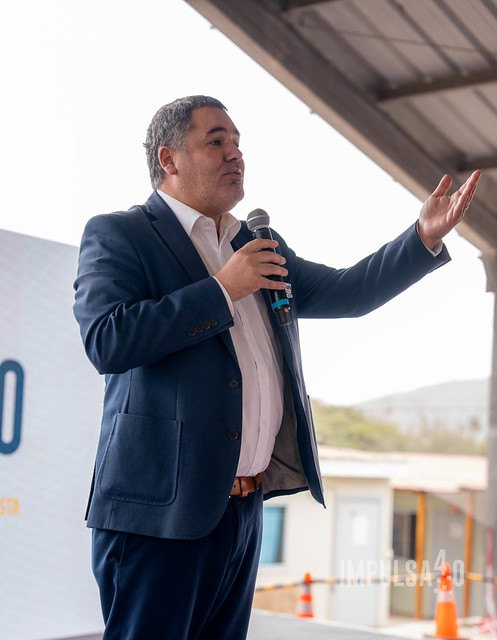

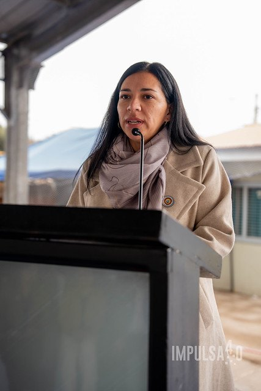

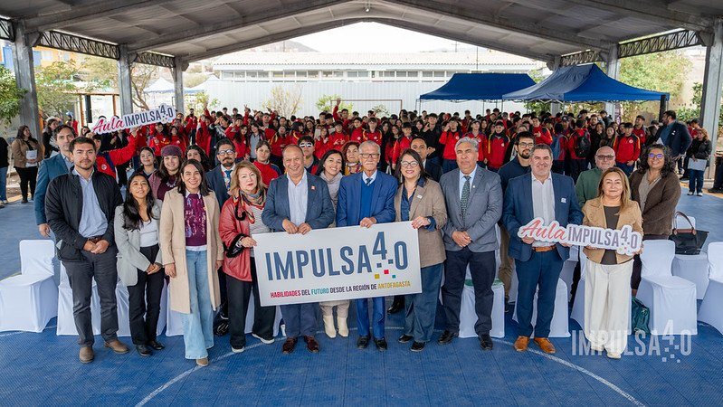

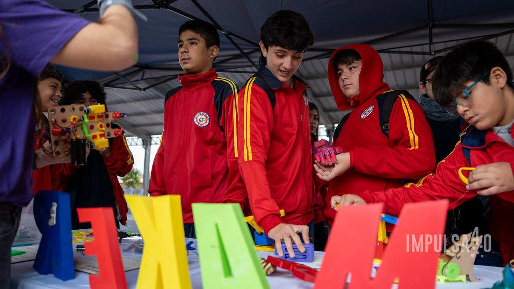